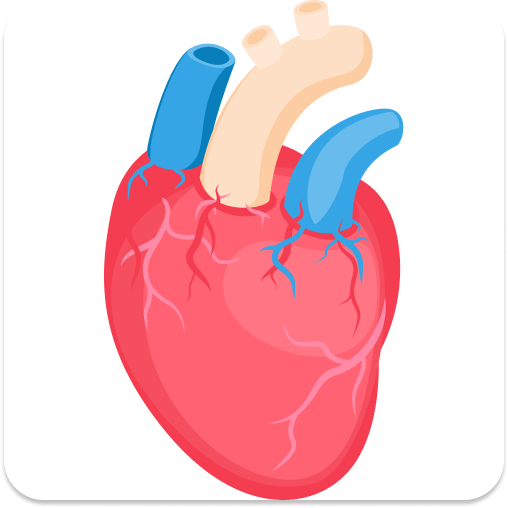
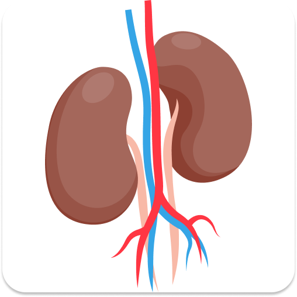
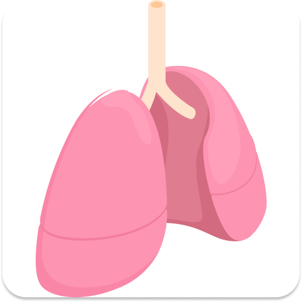
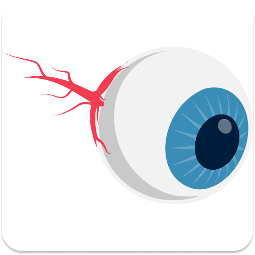
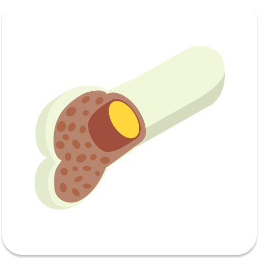
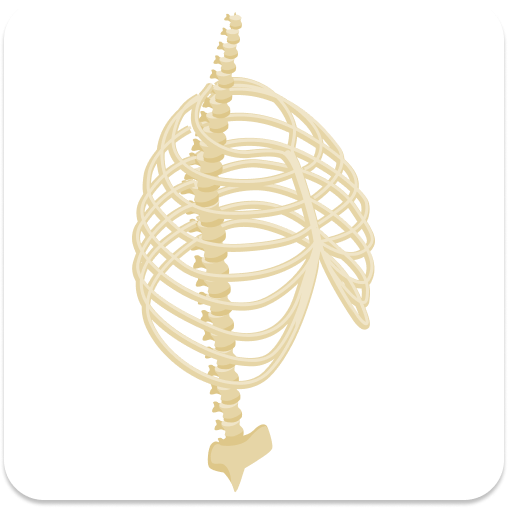
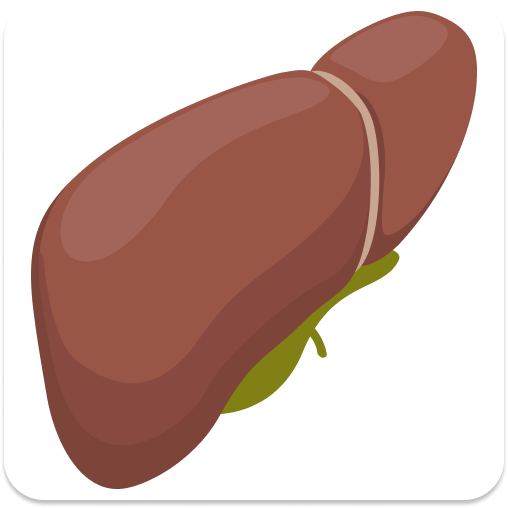
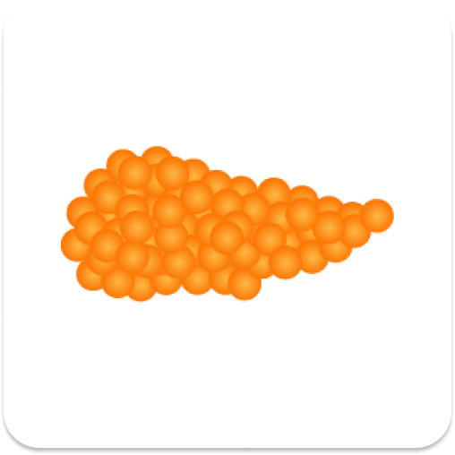
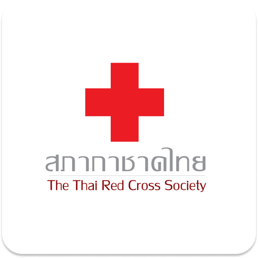
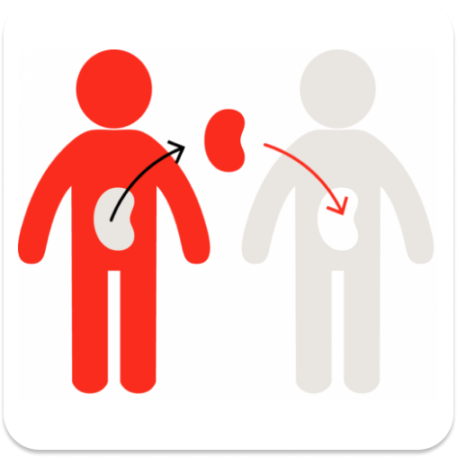

Donation Information
-
 Heart DonationWhen the heart fails, it tends to be because of diseases that cause weakening of the heart muscle or blockages of the blood vessels leading to the heart. Birth defects may also cause problems with the working of the heart. So, the two major reasons for heart transplantation. In both cases, if a life becomes seriously at risk, a heart transplant may be the only option.
-

Kidney DonationKidneys balance the amount of fluids and minerals in your body and create hormones. When they are not working properly, people have to spend many hours a day attached to a dialysis machine to replace some of these functions. A kidney transplant gives people the chance to live life free from dialysis.

Lung DonationLungs are a delicate part of the vital flow of oxygen round the body. When this process becomes damaged or the lungs are diseased, people can quite quickly become very seriously ill. So, there are around 1,400 people whoa re waiting for the lungs transplant.

Cornea DonationA cornea transplant makes a lasting difference to people’s lives and is a relatively quick procedure. Depending on which type of corneal transplant people need, and how much of the cornea needs replacing, the transplant can be completed in under an hour. So, the cornea transplant is very required for the patient around the world.

Bone Marrow DonationA bone marrow transplant is also called a stem cell transplant or, more specifically, a hematopoietic stem cell transplant. Transplantation can be used to treat certain types of cancer, such as leukemia, myeloma, and lymphoma, and other blood and immune system diseases that affect the bone marrow.

Bone DonationBone transplant is the process needed in bone defect cases: for hip operations that sometimes require extra bone. for the repair of bone fractures. for bone tumours where diseased or damaged bone is replaced by healthy donated bone.

Liver DonationAs the liver gets progressively damaged it will lose its functions causing liver failure, or end-stage liver disease. At this point, when the quality of life is so poor, or the patient is considered to have a shortened life-expectancy, a transplant is usually considered.

Pancreas DonationThe pancreas is a vital organ, performing functions necessary in the digestion process, the recipient's native pancreas is left in place, and the donated pancreas is attached in a different location. Because both a pancreas and a kidney are needed for this simultaneous operation, it can mean a very long wait and for a transplant. Also, it is very requisite for the patients.

National Blood CentreNational Blood Centre established the Thai Red Cross Plasma Fractionation Centre, is assigned by the government to be the core organization to provide sufficient blood and blood products supply with safe and highest quality from voluntary blood donors to patients nationwide. Throughout the years, the National Blood Centre blood and blood products have been implemented with quality and safety for both donors and receivers.
Siriraj HospitalThe blood bank at Siriraj Hospital at Mahidol University is available for all blood types Dr. Parichart said that the Siriraj Blood Donation Centre has a high standard of COVID-19 screening. Every donor and employee takes a temperature check before entering the center. All of the equipment and the area are also sterilized frequently for the safety.
Police General HospitalPolice General Hospital is located in Pathum Wan district of Bangkok on Rama 1 Road. The history of this hospital dates back over 100 years. Today, this hospital offers all the standard medical services and available for blood donation expected from an accredited national medical facility.

[General Info.] Organ Donation Legislation and PolicyThere are several Legislations and policies, which related to organ donation that needed to be concerned.
 [General Info.] Steps of Organ Donation
[General Info.] Steps of Organ DonationTo donate the organs, several steps needed to be done.